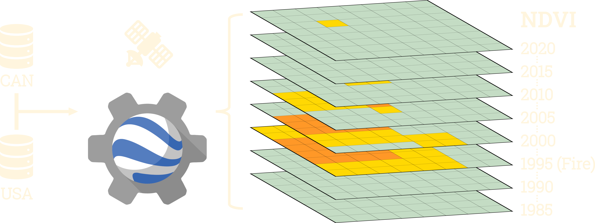

Figure 2: Graphical depiction of data collection methods. Openly sourced fire data from Canada and USA were collected and used to download NDVI data collected from Landsat satellites in Google Earth Engine for all years between 1985 and 2020.
Results

Figure 3: Log response ratios (LRR’s) of NDVI stability calculated across 5 year chunks, split across level 1 ecoregion classifications defined by the EPA. Solid lines indicate that the change in the LRR over time was significant.
- Ecosystems are stable before fires occur
- Length of time to full recovery differs across ecotypes
- Fires can impact stability of an ecosystem depending on the ecotype